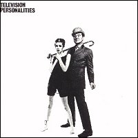

Television Personalities |
 1981 - Rough Trade - RT24 - LP Songs: This Angry Silence The Glittering Prices World Of Pauline Lewis A Family Affair Silly Girl Diary Of A Young Man Geoffrey Ingram I Know Where Syd Barret Lives Jackanory Stories Parties In Chelsea La Grande Illusion A Picture Of Dorian Gray The Crying Room Look Back In Anger |
1991 - Fire - REFIRE 7 - LP/CD/MC Songs: (same as original) All songs written by Dan Treacy and published by Twist And Shout Music. Remastered by Phil Vinall and Barry Woodward at Townhouse. Sleve recreation by Hand And Eye. Television Personalities ... And Don't The Kids Just Love It was recorded in 1980 at Mount Pleasant four-track recording studio, London. The artistes were Daniel Treacy, Mark Sheppard and Edward Ball. |